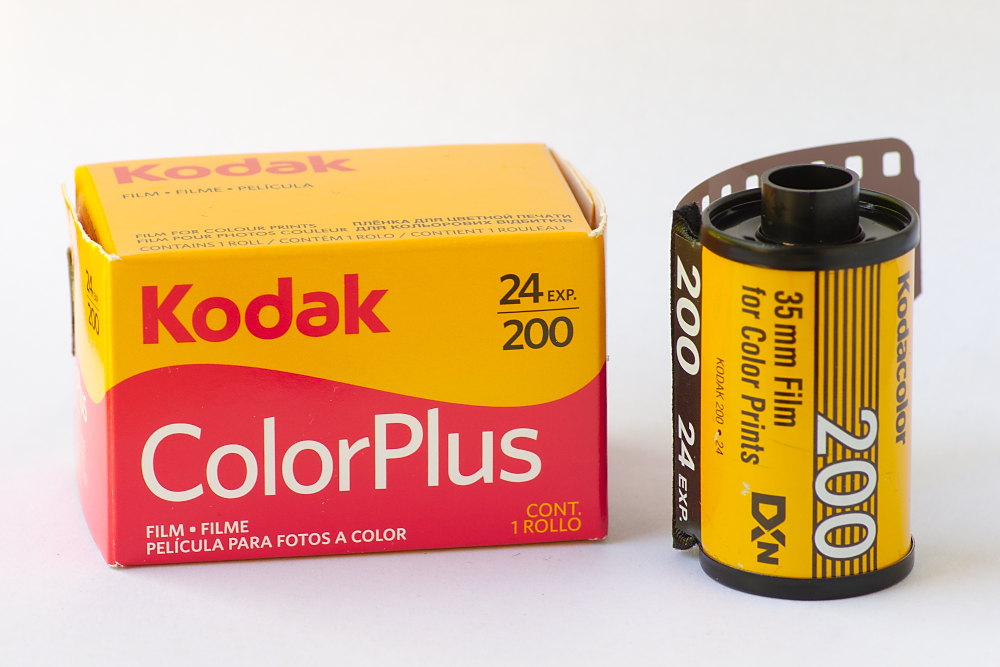

Kodak Colorplus 200

Merk ini mampu menghasilkan foto dengan kualitas terbaik yakni foto dengan tone warna kekuning-kuningan atau warna yang warm. Kodak Color Plus 200 sangat dipakai apabila Anda mau mengambil foto bersama matahari di sore ataupun pagi hari.
Film ini sangat cocok buat teman-teman pemula yang hendak mencoba-coba dunia fotografi atau mungkin hendak mengetes kamera baru. Kenapa? Karena harganya yang murah.
Buat teman-teman yang suka foto outdoor dan menyukai warna-warna yang menonjol, saya sangat menyarankan untuk mencoba film Kodak Colorplus 200 ini terlebih dahulu sebelum bermain-main dengan film lainnya.
Untuk pembelian silahankan Hubungi penjual
Hasil jepretan bisa dilihat di #kodakcolorplus200